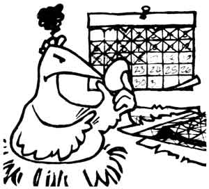

Roberta Cramer bought her eight-year-old daughter a big-as-they-come toy wagon one Christmas ... but the Blairstown, New Jersey mother didn't realize-until later-that she'd also bought a handy "in-house" hauler for [1] lugging in logs for the wood stove, [2] bringing all the groceries from the car in one trip, and [3] rolling tidying-up equipment from room to room on cleaning day. The versatile wagon serves yet another non-play purpose: Roberta's daughter likes to lie in the yuletide present-with a pillow and blanket-whenever the youngster gets to stay up late with the grown-ups.
Well? Can you guess what happens when the tired child finally falls asleep? That's right, Roberta just grabs the wagon's handle and rolls her snoozing girl right into the bedroom!
This is the time of year when cars seem to have a hankerin' for gettin" stuck in the snow. However, you can prepare for the calamity-the way Cobden, Illinois's Lee Hoinacki does-by carrying a three-foot piece of chicken wire in the trunk of your runabout. According to Lee, if you put that fence section under a spinning drive wheel, your car can easily get enough "grip" to pull itself out.
On the other hand, should you tote Tom Woods's remedy-a heavy chain-around with you, you'll be able to pack folds of iron linkage tightly under any free-turning tire. Tom claims that the chain will provide the needed gripping surface in nine out of ten cases (even in a Jefferson, New Hampshire winter)... and in that one "still stuck" instance, you can pull the linked cable out from under the tire, use it for hooking your car to a tractor, and get towed out!
Michael Brisson has a helpful trick for garlic lovers. The Rochester, New Yorker-who says he can't imagine a world without the pungent spice-has devised a no-sweat way to peel fresh garlic cloves. "Just hold each end of a single moon-shaped segment between your thumb and forefinger... twist back and forth ... and the skin will flake right off! If the clove breaks, you've twisted too far. But keep trying ... you'll soon be a real sleight-of-hand skin shedder!"
You can easily make a durable, "authentic" nest egg that should entice any nonproductive hen into "settlin' down to business". Just follow Julia Todd Forbes's advice and hustle up a real egg, some plaster of Paris, and two small pieces of waterproof tape. Punch 1/8" holes in the shell's two ends and blow out the edible-and usable-contents. Then tape up one opening, place a funnel in the other end, and drop in close to an "egg load" of dry plaster powder. Add water to the nearly full hen fruit, cover the open hole, and shake the entire egg vigorously, After all this is done, clean and tape the shell's "top end" ... and you'll have an imitation hen-to-be that's so sturdy it may last as long as three years! (In fact, the sample nest egg Julia mailed us arrived perfectly intact... and Ms. Forbes sent it from her home in Oratia, New Zealand!)
E.D. Church has a "hot" tip for those of MOTHER'S readers who dread using a cold, winter outhouse. Just wad up a two-page spread of newspaper, light the sheet, and drop it down the hole. Then, after the blaze has died out ("you shouldn't rush matters," E.D. warns), you can settle comfortably down on a prewarmed privy seat.
"And don't laugh," adds our advisor. "This technique works! Besides, if you've ever had to 'visit the little house' in weather like the 50-below-zero temperatures we get here in Dixie, Idaho ... you'll be glad to try any suggestion that might help!"
Tired of shoveling heavy built-up snow from your roof? If so, take a cue from Wallace, Idaho's Diane Varner and clean your home's lid the easy way. First gather up a long rope, a ladder, and a friend. Then have one person climb onto the housetop, lay the middle section of the line along the roof's crest, and throw the cord's ends over the house's gable sides. After this "homestead mountaineer" comes back down, the two of you grab opposite ends of the rope and-pulling back and forth-"saw" down into the snow. Once you've cut through to the root, match the angle of the line ends to the slope of your rooftop and start sawing down one side of the building.
Be sure to stand clear while you're working though, because-once you've cut through enough snow-the whole load will tall down in a sudden avalanche! Then, after that exciting snowslide, you can use the same procedures again... to clear off the other side of the house.
"One of my Rogers, Arkansas mountain neighbors showed me how to fill a crack in a dilapidated wood stove," says Casey Murphree. "And since a lot of us back-to-the-landers are stuck with trying to coax 'one more winter' out of worn-out heaters (till we can get-or build-something better), I'd like to share my friend's technique for making an easy-but-long-lasting stove patch. Just mix equal parts of wood ashes and table salt with enough water to form a thick paste. Then daub this 'firebox putty' over any cracks in your old wood-burner, and gradually heat the mending job until it dries."
Donna Victoria DuMouchel liked to start off her day by throwing on a comfortable robe and slippers ... until winter came and those night-chilled garments almost gave her frostbite! But the Culver, Californian solved her problem by figuring out a new "habit habit": Each night before retiring, Donna fills a plastic milk jug with steaming hot water, screws on the container's cap, wraps her robe and slippers around the hot bottle, and then tucks the entire bundle in bed with her. Ms. DuMouchel's homemade bed-warmer provides her with soothing heat all through the night ... and warm clothes in the morning!
Bracebridge, Ontario's Sue Brown writes: "I had just mastered the art of breadbaking last winter when my cantankerous electric oven went on the blink. I wasn't about to let an appliance breakdown stop my culinary efforts, though, so I set a cast-iron trying pan upside down on our wood stove, put a dough-filled loaf pan on top of the overturned skillet, and covered both objects with a large, inverted, cooking pot. Presto! I'd invented an 'Instant Oven'!
"And let me tell you, my homestyle 'bakery' worked so well that I'm using it again this winter ... even though the temperamental electric oven has long since been fixed!"
Darell and Cindy Cornatzer have wisely set their bedroom's kerosene lamp on a high bureau away from their nighttime resting place. The only inconvenience to this safe lighting arrangement comes when the Jacksonville, Florida couple is cuddly warm under heavy blankets, all set to drift away to dreamland ... BUT ... somebody has to get up and blow out the *&!@$ lamp!
You'll be glad to know that the Cornatzers solved their "lights out" problem by making their own down-home lamp snuffer! They simply ran a 1/8" plastic tube from their bedside to about three or four inches above the oil light, and fastened the line to the wall with loosely inserted barbed wire staples (and projecting wooden brackets at the two ends). Now Darell and Cindy can snuggle warmly in bed ... and blow out their lamp with a long-distance puff!
If you're trying to fit an old, small axehead over a new, BIG handle ... take Bob Paris's advice, and use a piece of broken glass to quickly-and more smoothly than you could manage with a knife blade-skive the end of that over-large handle down to size. (Remember, though, to heed this word of warning that the Blanchard, Oklahoman included with his useful tip: "Be sure to wear heavy gloves when you're working with glass.")
When you're driving through sleet or freezing rain-and your windshield ices up so badly that your wipers can't clear their full sweep-what can you do ... other than pull off the road and wait for a thaw?
Fact is, you don't have to let such an icy problem bother you at all! Just follow the example of Allentown, Pennsylvania's Richard Weldner and pull down both your sun visors. That way, the hot air pushed up by your defroster will get trapped next to the windshield ... where it'll quickly-and very efficiently- clear off all that accumulated ice.
"Woodstovers who like to barbecue in the summertime can make their own 'down-home briquets'," says Cassville, Missouri homesteader Steve Smith. "All you have to do is occasionally shovel out some of the embers (hickory coals are my absolute favorite) whenever you're about to reload the heater. Store the still-glowing wood bits in a bucket with a tight-fitting lid, and-by the time spring rolls around-you'll have enough charcoal to last you until the next winter."
OK. Now it's YOUR turn! We've all come up with some practical, down-home, time-tested solutions to the frustrating little problems that bug us every day. Let's hear YOUR best "horse sense" ideas so we can share 'em and all benefit.
Send your pointers to Down-Home Country Lore, P.O. Box 70, Hendersonville, North Carolina 28739, and I'll make sure that the most useful of the suggestions will appear in upcoming editions. A one-year subscription-or a one-year extension or an existing subscription-will then be sent to each contributor whose tip does get printed in this column.-MOTHER.
|
 |
|
|